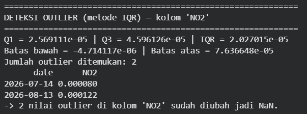
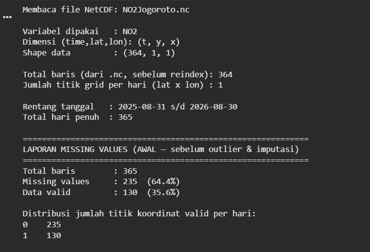
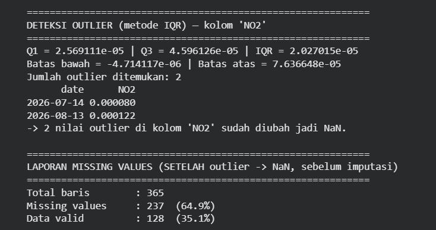
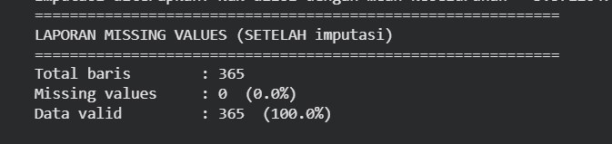

Pra-Pemrosesan Data Kewilayahan Kecamatan Jogoroto dan Ekstraksi 68 Fitur TSFEL#
1. Preprocessing: Penanganan Outliers dan Interpolasi Data#
Pada tahap ini, data yang sudah terkumpul diolah agar siap digunakan sebagai masukan pada model machine learning atau deep learning. Fokus utama pada tahap ini adalah menangani nilai yang menyimpang (outliers) dan mengisi nilai kosong (missing values) agar deret waktu menjadi konsisten secara temporal.
Deteksi Outlier dengan Metode IQR#
Metode Interquartile Range (IQR) digunakan untuk mendeteksi nilai pencilan pada kolom target, yaitu NO2. Nilai yang berada di luar batas bawah dan batas atas IQR akan diperlakukan sebagai outlier dan selanjutnya diubah menjadi NaN sebelum dilakukan interpolasi.
import pandas as pd
import numpy as np
import matplotlib.pyplot as plt
# Muat data hasil preprocessing awal
# Sesuaikan path sesuai lokasi file Anda
df = pd.read_csv("../file/NO2_Jogoroto_final.csv")
df['date'] = pd.to_datetime(df['date'])
df = df.sort_values('date').reset_index(drop=True)
# Hitung IQR
Q1 = df['NO2'].quantile(0.25)
Q3 = df['NO2'].quantile(0.75)
IQR = Q3 - Q1
lower_bound = Q1 - 1.5 * IQR
upper_bound = Q3 + 1.5 * IQR
# Deteksi outlier
outliers_iqr = df[(df['NO2'] < lower_bound) | (df['NO2'] > upper_bound)]
print("Jumlah Outlier (IQR):", len(outliers_iqr))
print(outliers_iqr[['date', 'NO2']].head())
Visualisasi Outlier#
Berikut adalah visualisasi data NO2 beserta titik-titik outlier yang berhasil dideteksi.

plt.figure(figsize=(15, 5))
plt.plot(df['date'], df['NO2'], label='NO2', linewidth=1)
plt.scatter(outliers_iqr['date'], outliers_iqr['NO2'],
color='red', marker='o', label='Outliers')
plt.axhline(upper_bound, color='orange', linestyle='dashed', label='Upper Bound (IQR)')
plt.axhline(lower_bound, color='blue', linestyle='dashed', label='Lower Bound (IQR)')
plt.title('Deteksi Outlier Data NO2 (Metode IQR)')
plt.xlabel('Tanggal')
plt.ylabel('Kadar NO2')
plt.legend()
plt.tight_layout()
plt.xticks(
ticks=[df['date'].iloc[0], df['date'].iloc[-1]],
labels=[df['date'].iloc[0].strftime('%Y-%m-%d'),
df['date'].iloc[-1].strftime('%Y-%m-%d')]
)
plt.show()
Penanganan Outlier dan Interpolasi Data#
Setelah outlier ditemukan, nilai tersebut diubah menjadi NaN. Kemudian dilakukan interpolasi linier untuk mengisi data yang hilang. Untuk bagian awal dan akhir rangkaian yang tidak dapat diinterpolasi, digunakan teknik bfill() dan ffill() agar seluruh data tetap utuh.
# Tandai outlier menjadi NaN
# df['NO2_cleaned'] = df['NO2'].mask((df['NO2'] < lower_bound) | (df['NO2'] > upper_bound))
# Lakukan interpolasi linier pada NaN yang sudah dibuat
# df['NO2_filled'] = df['NO2_cleaned'].interpolate(method='linear')
# df['NO2_filled'] = df['NO2_filled'].bfill().ffill()
# Simpan data yang sudah dibersihkan ke file baru
# df_no2_jogoroto = pd.DataFrame({
# "date": df['date'],
# "NO2": df['NO2_filled']
# })
# df_no2_jogoroto.to_csv("../file/NO2_Jogoroto_filled.csv", index=False)
Hasil Setelah Cleaning dan Interpolasi#
Setelah proses penanganan outlier dan imputasi selesai, data menjadi lebih stabil dan siap digunakan untuk ekstraksi fitur.
Berikut adalah contoh visualisasi data sebelum dan sesudah proses cleaning serta hasil imputasi:



# Contoh penerapan lengkap
df = pd.read_csv("../file/NO2_Jogoroto_final.csv")
df['date'] = pd.to_datetime(df['date'])
df = df.sort_values('date').reset_index(drop=True)
Q1 = df['NO2'].quantile(0.25)
Q3 = df['NO2'].quantile(0.75)
IQR = Q3 - Q1
lower_bound = Q1 - 1.5 * IQR
upper_bound = Q3 + 1.5 * IQR
# Ubah outlier menjadi NaN
cleaned = df['NO2'].mask((df['NO2'] < lower_bound) | (df['NO2'] > upper_bound))
# Interpolasi linier + backfill/forward fill untuk data di ujung
filled = cleaned.interpolate(method='linear').bfill().ffill()
# Simpan hasil
result = pd.DataFrame({
'date': df['date'],
'NO2': filled
})
result.to_csv('../file/NO2_Jogoroto_filled.csv', index=False)
print('Data berhasil dibersihkan dan disimpan ke ../file/NO2_Jogoroto_filled.csv')
2. Ekstraksi 68 Fitur dengan TSFEL#
Data deret waktu yang sudah bersih lalu diproses menggunakan library tsfel untuk menghasilkan fitur-fitur representatif. Pada tahap ini, saya mengekstraksi sebanyak 68 fitur dari deret waktu NO2, yang kemudian dapat dijadikan input untuk analisis lanjutan seperti klasifikasi, prediksi, atau pemodelan machine learning.
Langkah Ekstraksi Fitur#
import pandas as pd
import numpy as np
import inspect
import tsfel.feature_extraction.features as tsfel_features
# Muat data hasil preprocessing
df = pd.read_csv('../file/NO2_Jogoroto_filled.csv')
df['date'] = pd.to_datetime(df['date'])
df = df.sort_values('date').reset_index(drop=True)
# Target kolom
target_pollutant = 'NO2'
df[target_pollutant] = pd.to_numeric(df[target_pollutant], errors='coerce')
# Tetap pastikan data bersih dan urut berdasarkan waktu
df_clean = df.set_index('date').interpolate(method='time').ffill().bfill()
fs = 1
signal_1d = df_clean[target_pollutant].astype(float).values
# 68 fitur TSFEL
FEATURE_LIST = """abs_energy auc autocorr average_power calc_centroid calc_max calc_mean
calc_median calc_min calc_std calc_var dfa distance ecdf ecdf_percentile ecdf_percentile_count
ecdf_slope entropy fundamental_frequency higuchi_fractal_dimension hist_mode human_range_energy
hurst_exponent interq_range kurtosis lempel_ziv lpcc max_frequency max_power_spectrum
maximum_fractal_length mean_abs_deviation mean_abs_diff mean_diff median_abs_deviation
median_abs_diff median_diff median_frequency mfcc mse negative_turning neighbourhood_peaks
petrosian_fractal_dimension pk_pk_distance positive_turning power_bandwidth rms skewness slope
spectral_centroid spectral_decrease spectral_distance spectral_entropy spectral_kurtosis
spectral_positive_turning spectral_roll_off spectral_roll_on spectral_skewness spectral_slope
spectral_spread spectral_variation spectrogram_mean_coeff sum_abs_diff wavelet_abs_mean
wavelet_energy wavelet_entropy wavelet_std wavelet_var zero_cross""".split()
print('Jumlah fitur yang diproses:', len(FEATURE_LIST))
# Fungsi bantu untuk merubah output TSFEL menjadi skalar
def to_scalar(result):
if isinstance(result, dict) and 'values' in result:
result = result['values']
if isinstance(result, (list, tuple, np.ndarray)):
arr = np.asarray(result, dtype=float)
return float(np.nanmean(arr))
return float(result)
# Fungsi ekstraksi satu fitur
def extract_one(fn_name, signal, fs):
fn = getattr(tsfel_features, fn_name)
params = inspect.signature(fn).parameters
if 'fs' in params:
result = fn(signal, fs)
else:
result = fn(signal)
return to_scalar(result)
# Ekstraksi fitur
row = {}
for fn_name in FEATURE_LIST:
row[fn_name] = extract_one(fn_name, signal_1d, fs)
extracted_features_final = pd.DataFrame([row])
print(f'Berhasil mengekstrak {extracted_features_final.shape[1]} fitur dari data {target_pollutant}')
# Simpan hasil ekstraksi
extracted_features_final.to_csv('../file/NO2_Jogoroto_TSFEL.csv', index=False)
Hasil Ekstraksi Fitur#
Data hasil ekstraksi dapat dilihat pada file CSV berikut:
../file/NO2_Jogoroto_TSFEL.csv
File ini berisi 68 kolom fitur yang mewakili karakteristik statistik, temporal, dan spektral dari deret waktu NO2 di wilayah Jogoroto.
3. Pengelompokan Domain Fitur TSFEL#
Fitur yang dihasilkan oleh TSFEL dapat dikelompokkan menjadi tiga domain utama, yaitu:
A. Domain Statistical (Statistik)#
Domain ini digunakan untuk melihat bentuk distribusi dan karakteristik numerik dari data tanpa memperhatikan urutan waktu. Fitur yang termasuk di dalamnya di antaranya:
calc_mean,calc_median,calc_max,calc_mincalc_std,calc_varskewness,kurtosisinterq_range,rmshist_mode,mean_abs_deviation,median_abs_deviationecdf,ecdf_percentile,ecdf_slope,ecdf_percentile_count
B. Domain Temporal (Waktu)#
Domain ini menangkap dinamika perubahan data dari satu waktu ke waktu berikutnya. Beberapa fitur yang umum dipakai di antaranya:
abs_energy,average_power,aucautocorr,distance,msemean_diff,mean_abs_diff,median_diff,median_abs_diffsum_abs_diff,zero_crosspositive_turning,negative_turningdfa,hurst_exponent,lempel_zivslope,pk_pk_distance
C. Domain Spectral (Frekuensi)#
Domain ini mengubah sinyal waktu menjadi representasi frekuensi agar pola periodik atau osilasi bisa terlihat. Fitur utama yang sering digunakan di antaranya:
fundamental_frequency,max_frequency,median_frequencyspectral_centroid,spectral_spread,spectral_slopespectral_entropy,spectral_kurtosis,spectral_skewnessspectral_roll_off,spectral_roll_on,spectral_variationmax_power_spectrum,power_bandwidthlpcc,mfcc,spectrogram_mean_coeffwavelet_abs_mean,wavelet_energy,wavelet_entropy,wavelet_std,wavelet_var
4. Penjelasan Singkat#
Proses preprocessing dan ekstraksi fitur ini sangat penting karena data mentah sering kali mengandung noise, missing value, dan outlier yang dapat mengganggu kualitas analisis. Dengan menangani semua ketidakrataan tersebut terlebih dahulu, fitur yang dihasilkan akan lebih representatif dan stabil untuk dipakai pada tahap berikutnya, seperti pemodelan prediksi, klasifikasi, atau analisis pola spasial-temporal.
Pada konteks penelitian ini, penggunaan TSFEL memungkinkan ekstraksi fitur dari data NO2 wilayah Jogoroto secara otomatis dan konsisten. Total 68 fitur yang diperoleh mencakup karakteristik statistik, temporal, dan spektral sehingga dapat mendukung pengambilan keputusan berbasis data dengan lebih baik.